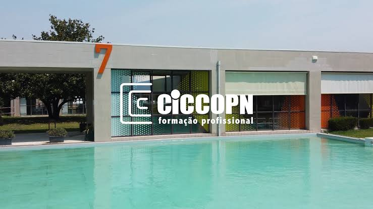

Apresentação
Académica
Aqui gostaria de me apresentar academicamente com a maior parte das minhas experiências e caminhos académicos e profissionais.
Escola Básica e Secundária de Coronado e Castro
Na Escola Básica e Secundária de Coronado e Castro, foi onde frequentei do 5º ao 6º ano, procedendo mais tarde por um curso de aprendizagem de "Operador de Distribuição", com equivalencia ao 9º ano

Ciccopn
No centro de Formaçao profissional Ciccopn, foi onde efetuei o meu curso de aprendizagem de "técnico de Informatica e Sistemas".